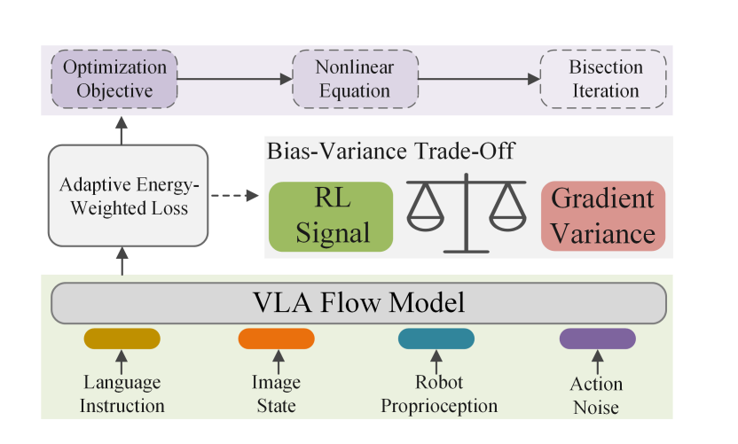
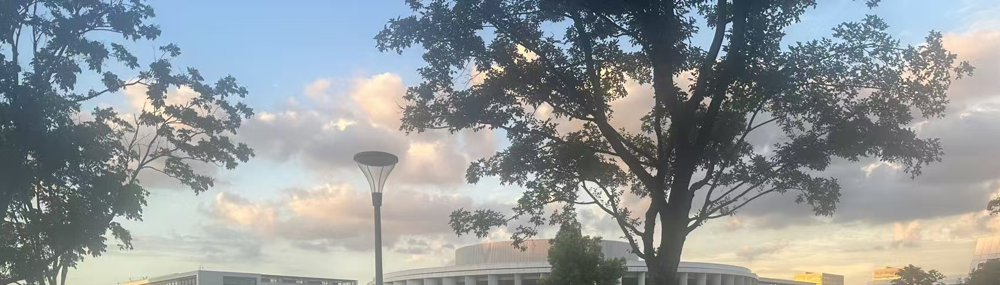
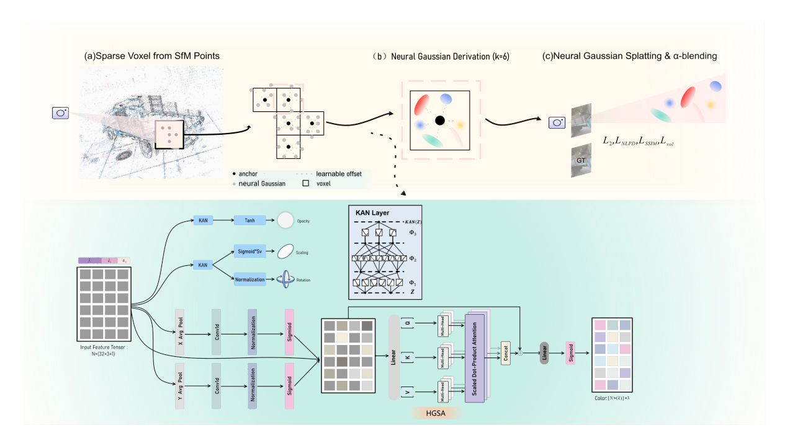
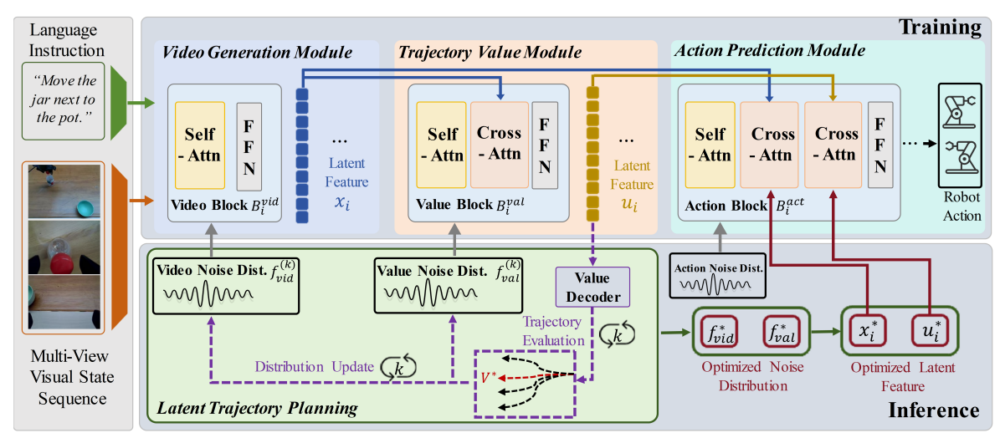
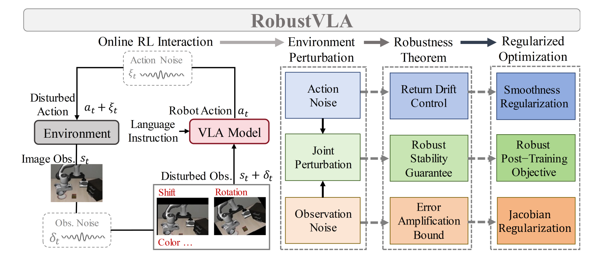
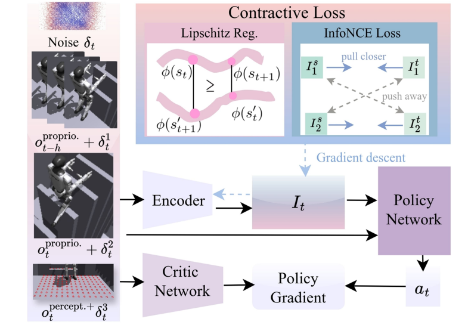

Intro
I am an undergraduate student in Communication Engineering at Hainan University, based in Haikou, China.
During my undergraduate studies, I was also a visiting student at Westlake University (MiLAB), advised by Prof. Donglin Wang.
My research interests lie in Embodied AI, Reinforcement Learning.
News
• [2025/06] I became a visiting student at Westlake University (MiLAB).
• [2024/08] I became the Chair of the IEEE Hainan University(STB99094) Student Branch.
Research
* Equal contribution, + Equal advising



MISC
I have gained hands-on experience in the design and development of robotic systems, covering both hardware prototyping and learning-based control. Below are selected examples of projects I have contributed to, including PCB design and fabrication, as well as simulation and real-world robotic experiments.
PCB Design and Fabrication
The following figure summarizes several PCB designs I developed during my undergraduate studies, including systems for indoor temperature control, ultrasonic ranging, intelligent mobile robots, and visible light communication.

Simulation and Real-World Robotics
Here are some snapshots from the robotics projects I have worked on, including Vision Language Navigation (VLN), Vision Language Action (VLA), Visual Servo, and RL for quadruped and humanoid robots, in both simulation and real-world settings.

Update: 2026.02
The website template was borrowed from Dr.Songfang Han and Dr.Binghao Huang.